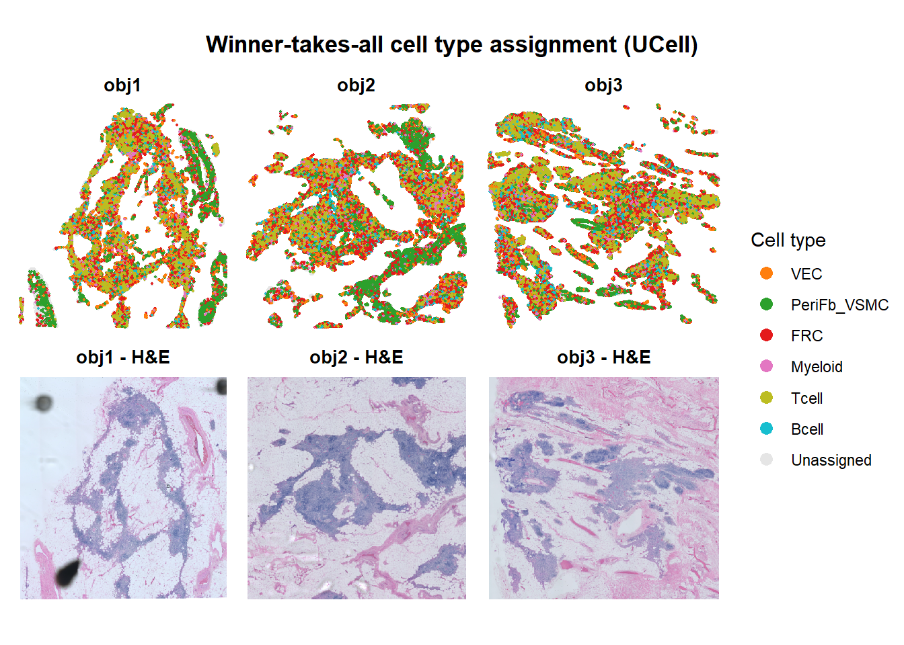

Spatial_HD_FALC
HWC
2026-09-03
Last updated: 2026-10-07
Checks: 5 2
Knit directory: Spatial_HD_2026/
This reproducible R Markdown analysis was created with workflowr (version 1.7.2). The Checks tab describes the reproducibility checks that were applied when the results were created. The Past versions tab lists the development history.
The R Markdown file has unstaged changes. To know which version of
the R Markdown file created these results, you’ll want to first commit
it to the Git repo. If you’re still working on the analysis, you can
ignore this warning. When you’re finished, you can run
wflow_publish to commit the R Markdown file and build the
HTML.
Great job! The global environment was empty. Objects defined in the global environment can affect the analysis in your R Markdown file in unknown ways. For reproduciblity it’s best to always run the code in an empty environment.
The command set.seed(20260722) was run prior to running
the code in the R Markdown file. Setting a seed ensures that any results
that rely on randomness, e.g. subsampling or permutations, are
reproducible.
Great job! Recording the operating system, R version, and package versions is critical for reproducibility.
Nice! There were no cached chunks for this analysis, so you can be confident that you successfully produced the results during this run.
Using absolute paths to the files within your workflowr project makes it difficult for you and others to run your code on a different machine. Change the absolute path(s) below to the suggested relative path(s) to make your code more reproducible.
| absolute | relative |
|---|---|
| /R/Spatial_HD_2026/data/processed_seurat/ | data/processed_seurat |
| /R/Spatial_HD_2026/data/image to merge/20260916_Hu_pericard_AHP5PB1_STHD_squA.jpg | data/image to merge/20260916_Hu_pericard_AHP5PB1_STHD_squA.jpg |
Great! You are using Git for version control. Tracking code development and connecting the code version to the results is critical for reproducibility.
The results in this page were generated with repository version bbbc0ee. See the Past versions tab to see a history of the changes made to the R Markdown and HTML files.
Note that you need to be careful to ensure that all relevant files for
the analysis have been committed to Git prior to generating the results
(you can use wflow_publish or
wflow_git_commit). workflowr only checks the R Markdown
file, but you know if there are other scripts or data files that it
depends on. Below is the status of the Git repository when the results
were generated:
Ignored files:
Ignored: .Rhistory
Ignored: .Rproj.user/
Ignored: data/image to merge/
Ignored: data/processed_seurat/
Untracked files:
Untracked: analysis/Figure_SpatialHD_FALC_LN test.Rmd
Untracked: analysis/Test_Figure_SpatialHD_FALC_8um.Rmd
Unstaged changes:
Modified: analysis/Figure_SpatialHD_FALC_clean.Rmd
Modified: analysis/SpatialHD_FALC_revision_corrected.Rmd
Note that any generated files, e.g. HTML, png, CSS, etc., are not included in this status report because it is ok for generated content to have uncommitted changes.
These are the previous versions of the repository in which changes were
made to the R Markdown
(analysis/Figure_SpatialHD_FALC_clean.Rmd) and HTML
(docs/Figure_SpatialHD_FALC_clean.html) files. If you’ve
configured a remote Git repository (see ?wflow_git_remote),
click on the hyperlinks in the table below to view the files as they
were in that past version.
| File | Version | Author | Date | Message |
|---|---|---|---|---|
| Rmd | ff39b9d | HWC0406 | 2026-10-01 | 20261001 |
| html | ff39b9d | HWC0406 | 2026-10-01 | 20261001 |
Workflow: (1) SCT normalisation per sample, (2) cell-type signatures, (3) z-score signature maps, (4) UCell scoring, (5) UCell maps and winner-takes-all assignment, (6) zoomed views on the H&E.
Data input
data_dir <- "/R/Spatial_HD_2026/data/processed_seurat/"
seu_list <- list(
obj1 = readRDS(file.path(data_dir, "430721_1-20260821_Hu_PericardFALC_AHP2_squA_S2_16um.rds")),
obj2 = readRDS(file.path(data_dir, "433121_1-20260915_Hu_PericardFALC_AHP5_squA_S1_16um.rds")),
obj3 = readRDS(file.path(data_dir, "433121_2-20260915_Hu_PericardFALC_AHP6_squD_S2_16um.rds"))
)
samples <- names(seu_list)
# full-resolution H&E images (same pixel space as the Seurat coordinates);
# samples without an entry fall back to the lowres image stored in the object
he_hires_path <- list(
obj2 = "/R/Spatial_HD_2026/data/image to merge/20260916_Hu_pericard_AHP5PB1_STHD_squA.jpg"
)
for (s in samples) {
message(s, ": ", ncol(seu_list[[s]]), " bins, ", nrow(seu_list[[s]]),
" features; images: ", paste(Images(seu_list[[s]]), collapse = ", "))
}SCT normalization
# After SCTransform the default assay is SCT, so in each SCE
# counts = SCT-corrected counts (used by UCell)
# logcounts = log1p of those counts (used for gene maps and z-scores)
sce_list <- list()
for (s in samples) {
seu <- seu_list[[s]]
assay <- DefaultAssay(seu)
# [CORRECTED] layer= instead of the deprecated slot= (Seurat v5)
seu <- seu[, colSums(GetAssayData(seu, assay = assay, layer = "counts")) > 0]
seu <- SCTransform(seu, assay = assay, verbose = FALSE)
# [SIMPLIFIED] removed the SCT_residuals assay and HVG annotations: nothing
# downstream uses them, and the dense genes x bins residual matrix costs
# several GB of memory per sample
sce_list[[s]] <- as.SingleCellExperiment(seu)
message(s, ": ", ncol(sce_list[[s]]), " bins retained")
}Spatial coordinate helpers
# ---------------------------------------------------------------------------
# get_coords(): the ONLY source of spatial coordinates in this document.
# Returns two frames for each SCE bin (same order as the SCE):
# x, y : lowres image pixels, y negated -> used by all whole-sample maps
# px, py : full-resolution pixels -> used by the zoomed H&E views
# ---------------------------------------------------------------------------
get_coords <- function(seu, sce, image_name = NULL) {
if (is.null(image_name)) image_name <- Images(seu)[1]
img <- seu[[image_name]]
co <- GetTissueCoordinates(img)
bc <- if ("cell" %in% colnames(co)) as.character(co$cell) else rownames(co)
xcol <- if ("imagecol" %in% colnames(co)) "imagecol" else "x"
ycol <- if ("imagerow" %in% colnames(co)) "imagerow" else "y"
idx <- match(colnames(sce), bc)
if (anyNA(idx))
stop(sum(is.na(idx)), " SCE barcodes have no entry in the tissue coordinates.")
px <- as.numeric(co[[xcol]])[idx]
py <- as.numeric(co[[ycol]])[idx]
he <- GetImage(img, mode = "raster")
lowres <- ScaleFactors(img)$lowres
is_fullres <- max(px, na.rm = TRUE) > ncol(he) * 1.05 ||
max(py, na.rm = TRUE) > nrow(he) * 1.05
f <- if (is_fullres) lowres else 1
# [SIMPLIFIED] full-res pixels are returned here, so the zoom chunks no longer
# re-read coordinates, re-match barcodes or test swap/flip orientations
data.frame(x = px * f,
y = -py * f,
px = if (is_fullres) px else px / lowres,
py = if (is_fullres) py else py / lowres)
}
# crop_he(): H&E cropped to the tissue, in the same frame as x, y above
crop_he <- function(seu, image_name = NULL, pad_frac = 0.02) {
if (is.null(image_name)) image_name <- Images(seu)[1]
img <- seu[[image_name]]
he <- GetImage(img, mode = "raster")
ih <- nrow(he); iw <- ncol(he)
co <- GetTissueCoordinates(img)
xcol <- if ("imagecol" %in% colnames(co)) "imagecol" else "x"
ycol <- if ("imagerow" %in% colnames(co)) "imagerow" else "y"
cx <- as.numeric(co[[xcol]])
cy <- as.numeric(co[[ycol]])
if (max(cx, na.rm = TRUE) > iw * 1.05 || max(cy, na.rm = TRUE) > ih * 1.05) {
f <- ScaleFactors(img)$lowres
cx <- cx * f; cy <- cy * f
}
padx <- pad_frac * diff(range(cx, na.rm = TRUE))
pady <- pad_frac * diff(range(cy, na.rm = TRUE))
c1 <- max(1, floor(min(cx, na.rm = TRUE) - padx))
c2 <- min(iw, ceiling(max(cx, na.rm = TRUE) + padx))
r1 <- max(1, floor(min(cy, na.rm = TRUE) - pady))
r2 <- min(ih, ceiling(max(cy, na.rm = TRUE) + pady))
list(raster = he[r1:r2, c1:c2, drop = FALSE],
xmin = c1, xmax = c2, ymin = -r2, ymax = -r1)
}
he_panel <- function(seu, label) {
cr <- crop_he(seu)
ggplot() +
annotation_raster(cr$raster, xmin = cr$xmin, xmax = cr$xmax,
ymin = cr$ymin, ymax = cr$ymax) +
xlim(cr$xmin, cr$xmax) + ylim(cr$ymin, cr$ymax) +
coord_fixed() + theme_void() +
labs(subtitle = paste0(label, " - H&E")) +
theme(plot.subtitle = element_text(hjust = 0.5, face = "bold", size = 10))
}
# image info per sample: lowres raster, scale factor and bin size
img_info <- lapply(seu_list, function(seu) {
img <- seu[[Images(seu)[1]]]
sf <- ScaleFactors(img)
list(raster = GetImage(img, mode = "raster"),
lowres = sf$lowres,
bin_px = sf$spot) # bin width in full-res pixels
})
coord_list <- list()
he_panels <- list()
for (s in samples) {
coord_list[[s]] <- data.frame(sample = s, get_coords(seu_list[[s]], sce_list[[s]]))
he_panels[[s]] <- he_panel(seu_list[[s]], s)
}
wrap_plots(he_panels, nrow = 1)
| Version | Author | Date |
|---|---|---|
| ff39b9d | HWC0406 | 2026-10-01 |
Plotting of selected genes
# [CORRECTED] unique(): CD14 was listed twice
genes_of_interest <- unique(c("PECAM1","CLDN5","ACKR1","VWF","PLVAP","ICAM2","AQP1","COL1A1","COL1A2","MYL9","LUM","ACTA2","PDGFRB","TAGLN","MYH11","CCL19","PDPN","VCAM1","IL33","CLU","IL7","CXCL12","DCN","LYZ","S100A9","S100A8","CTSS","CST3","GPNMB","CD68","MRC1","CD3D","CD3E","CD3G","IL7R","TRBC1","TRBC2","TRAC","MS4A1","CD79A","CD79B","IGHM","MZB1","XBP1","CD38"))
for (s in samples) {
gone <- setdiff(genes_of_interest, rownames(sce_list[[s]]))
if (length(gone)) message(s, " missing from SCT: ", paste(gone, collapse = ", "))
}
gene_plots <- list()
for (gene in genes_of_interest) {
expr <- lapply(samples, function(s)
if (gene %in% rownames(sce_list[[s]])) as.numeric(logcounts(sce_list[[s]])[gene, ]) else NULL)
names(expr) <- samples
det <- vapply(expr, function(e) !is.null(e) && any(e > 0), logical(1))
lims <- if (any(det)) range(unlist(expr[det])) else NULL
panels <- lapply(samples, function(s) {
d <- coord_list[[s]][, c("x", "y")]
if (det[[s]]) {
d$expression <- expr[[s]]
d <- d[order(d$expression), ]
ggplot(d, aes(x, y, color = expression)) +
geom_point(size = 0.3, alpha = 0.6) +
scale_color_viridis_c(option = "plasma", limits = lims) +
coord_fixed() + theme_void() +
labs(subtitle = s, color = "LogExpr") +
theme(plot.subtitle = element_text(hjust = 0.5, face = "bold", size = 10))
} else {
reason <- if (is.null(expr[[s]])) "not in dataset" else "all zero"
ggplot(d, aes(x, y)) +
geom_point(size = 0.3, alpha = 0.4, color = "grey80") +
annotate("text", x = mean(range(d$x)), y = mean(range(d$y)),
label = paste0("Not detectable\n(", reason, ")"),
fontface = "italic", size = 4, color = "grey30") +
coord_fixed() + theme_void() +
labs(subtitle = s) +
theme(plot.subtitle = element_text(hjust = 0.5, face = "bold", size = 10))
}
})
gene_plots[[gene]] <- wrap_plots(c(panels, he_panels), ncol = length(samples)) +
plot_layout(guides = "collect") +
plot_annotation(title = gene,
theme = theme(plot.title = element_text(hjust = 0.5, face = "bold", size = 14)))
print(gene_plots[[gene]])
}
| Version | Author | Date |
|---|---|---|
| ff39b9d | HWC0406 | 2026-10-01 |

| Version | Author | Date |
|---|---|---|
| ff39b9d | HWC0406 | 2026-10-01 |

| Version | Author | Date |
|---|---|---|
| ff39b9d | HWC0406 | 2026-10-01 |

| Version | Author | Date |
|---|---|---|
| ff39b9d | HWC0406 | 2026-10-01 |

| Version | Author | Date |
|---|---|---|
| ff39b9d | HWC0406 | 2026-10-01 |

| Version | Author | Date |
|---|---|---|
| ff39b9d | HWC0406 | 2026-10-01 |

| Version | Author | Date |
|---|---|---|
| ff39b9d | HWC0406 | 2026-10-01 |

| Version | Author | Date |
|---|---|---|
| ff39b9d | HWC0406 | 2026-10-01 |

| Version | Author | Date |
|---|---|---|
| ff39b9d | HWC0406 | 2026-10-01 |

| Version | Author | Date |
|---|---|---|
| ff39b9d | HWC0406 | 2026-10-01 |

| Version | Author | Date |
|---|---|---|
| ff39b9d | HWC0406 | 2026-10-01 |

| Version | Author | Date |
|---|---|---|
| ff39b9d | HWC0406 | 2026-10-01 |

| Version | Author | Date |
|---|---|---|
| ff39b9d | HWC0406 | 2026-10-01 |

| Version | Author | Date |
|---|---|---|
| ff39b9d | HWC0406 | 2026-10-01 |

| Version | Author | Date |
|---|---|---|
| ff39b9d | HWC0406 | 2026-10-01 |

| Version | Author | Date |
|---|---|---|
| ff39b9d | HWC0406 | 2026-10-01 |

| Version | Author | Date |
|---|---|---|
| ff39b9d | HWC0406 | 2026-10-01 |

| Version | Author | Date |
|---|---|---|
| ff39b9d | HWC0406 | 2026-10-01 |

| Version | Author | Date |
|---|---|---|
| ff39b9d | HWC0406 | 2026-10-01 |

| Version | Author | Date |
|---|---|---|
| ff39b9d | HWC0406 | 2026-10-01 |

| Version | Author | Date |
|---|---|---|
| ff39b9d | HWC0406 | 2026-10-01 |

| Version | Author | Date |
|---|---|---|
| ff39b9d | HWC0406 | 2026-10-01 |

| Version | Author | Date |
|---|---|---|
| ff39b9d | HWC0406 | 2026-10-01 |

| Version | Author | Date |
|---|---|---|
| ff39b9d | HWC0406 | 2026-10-01 |

| Version | Author | Date |
|---|---|---|
| ff39b9d | HWC0406 | 2026-10-01 |

| Version | Author | Date |
|---|---|---|
| ff39b9d | HWC0406 | 2026-10-01 |

| Version | Author | Date |
|---|---|---|
| ff39b9d | HWC0406 | 2026-10-01 |

| Version | Author | Date |
|---|---|---|
| ff39b9d | HWC0406 | 2026-10-01 |

| Version | Author | Date |
|---|---|---|
| ff39b9d | HWC0406 | 2026-10-01 |

| Version | Author | Date |
|---|---|---|
| ff39b9d | HWC0406 | 2026-10-01 |

| Version | Author | Date |
|---|---|---|
| ff39b9d | HWC0406 | 2026-10-01 |

| Version | Author | Date |
|---|---|---|
| ff39b9d | HWC0406 | 2026-10-01 |

| Version | Author | Date |
|---|---|---|
| ff39b9d | HWC0406 | 2026-10-01 |

| Version | Author | Date |
|---|---|---|
| ff39b9d | HWC0406 | 2026-10-01 |

| Version | Author | Date |
|---|---|---|
| ff39b9d | HWC0406 | 2026-10-01 |

| Version | Author | Date |
|---|---|---|
| ff39b9d | HWC0406 | 2026-10-01 |

| Version | Author | Date |
|---|---|---|
| ff39b9d | HWC0406 | 2026-10-01 |

| Version | Author | Date |
|---|---|---|
| ff39b9d | HWC0406 | 2026-10-01 |

| Version | Author | Date |
|---|---|---|
| ff39b9d | HWC0406 | 2026-10-01 |

| Version | Author | Date |
|---|---|---|
| ff39b9d | HWC0406 | 2026-10-01 |

| Version | Author | Date |
|---|---|---|
| ff39b9d | HWC0406 | 2026-10-01 |

| Version | Author | Date |
|---|---|---|
| ff39b9d | HWC0406 | 2026-10-01 |

| Version | Author | Date |
|---|---|---|
| ff39b9d | HWC0406 | 2026-10-01 |

| Version | Author | Date |
|---|---|---|
| ff39b9d | HWC0406 | 2026-10-01 |

| Version | Author | Date |
|---|---|---|
| ff39b9d | HWC0406 | 2026-10-01 |
Set up cell type signatures
my_signatures <- list(
VEC = c("PECAM1","CLDN5","ACKR1","VWF","PLVAP","ICAM2","AQP1"),
PeriFb_VSMC = c("COL1A1","COL1A2","MYL9","LUM","ACTA2","PDGFRB","TAGLN","MYH11"),
FRC = c("CCL19","PDPN","VCAM1","IL33","CLU","IL7","CXCL12","DCN"),
Myeloid = c("LYZ","S100A9","S100A8","CTSS","CST3","GPNMB","CD68","MRC1"),
Tcell = c("CD3D","CD3E","CD3G","IL7R","TRBC1","TRBC2","TRAC"),
Bcell = c("MS4A1","CD79A","CD79B","IGHM","MZB1","XBP1","CD38")
)
# genes must be present in EVERY object so scores use the same gene set
common_genes <- Reduce(intersect, lapply(sce_list, rownames))
sig_present <- lapply(my_signatures, intersect, common_genes)
for (sig in names(my_signatures)) {
missing <- setdiff(my_signatures[[sig]], sig_present[[sig]])
message(sig, ": ", length(sig_present[[sig]]), "/", length(my_signatures[[sig]]), " present",
if (length(missing)) paste0(" MISSING: ", paste(missing, collapse = ", ")) else "")
}
sig_use <- sig_present[lengths(sig_present) >= 3]
message("Using ", length(sig_use), " signatures: ", paste(names(sig_use), collapse = ", "))
cell_colors <- c(
VEC = "#ff7f0e",
PeriFb_VSMC = "#2ca02c",
FRC = "#E41A1C",
Myeloid = "#e377c2",
Tcell = "#bcbd22",
Bcell = "#17becf",
Unassigned = "grey90"
)
# [SIMPLIFIED] one map function for every signature-score plot below
plot_score_maps <- function(scores, sig, colour_scale, legend_title) {
panels <- lapply(samples, function(s) {
d <- data.frame(x = coord_list[[s]]$x, y = coord_list[[s]]$y,
score = scores[[s]][, sig])
d <- d[order(d$score), ]
ggplot(d, aes(x, y, color = score)) +
geom_point(size = 0.4, alpha = 0.8) +
colour_scale +
coord_fixed() + theme_void() +
labs(subtitle = s, color = legend_title) +
theme(plot.subtitle = element_text(hjust = 0.5, face = "bold", size = 10))
})
wrap_plots(c(panels, he_panels), ncol = length(samples)) +
plot_layout(guides = "collect") +
plot_annotation(title = sig,
theme = theme(plot.title = element_text(hjust = 0.5, face = "bold", size = 14)))
}Z-score signature maps
score_signature <- function(sce, genes) {
mat <- as.matrix(logcounts(sce)[genes, , drop = FALSE])
mu <- rowMeans(mat)
sdv <- apply(mat, 1, sd)
sdv[sdv == 0 | is.na(sdv)] <- 1 # zero-variance genes -> score 0
colMeans((mat - mu) / sdv)
}
zscore_list <- lapply(sce_list, function(sce)
sapply(sig_use, function(g) score_signature(sce, g)))
keep_z <- Reduce(intersect, lapply(zscore_list, function(m) colnames(m)[apply(m, 2, sd) > 0]))
zscore_list <- lapply(zscore_list, function(m) m[, keep_z, drop = FALSE])
zscore_plots <- list()
for (sig in keep_z) {
v <- unlist(lapply(zscore_list, function(m) m[, sig]))
zscore_plots[[sig]] <- plot_score_maps(
zscore_list, sig,
scale_color_viridis_c(option = "magma", limits = quantile(v, c(0.01, 0.99)),
oob = scales::squish),
"z-score")
print(zscore_plots[[sig]])
}
| Version | Author | Date |
|---|---|---|
| ff39b9d | HWC0406 | 2026-10-01 |

| Version | Author | Date |
|---|---|---|
| ff39b9d | HWC0406 | 2026-10-01 |

| Version | Author | Date |
|---|---|---|
| ff39b9d | HWC0406 | 2026-10-01 |

| Version | Author | Date |
|---|---|---|
| ff39b9d | HWC0406 | 2026-10-01 |

| Version | Author | Date |
|---|---|---|
| ff39b9d | HWC0406 | 2026-10-01 |

| Version | Author | Date |
|---|---|---|
| ff39b9d | HWC0406 | 2026-10-01 |
UCell scoring
score_ucell <- function(seu, sce, sigs, maxRank, ncores = 4) {
# raw counts from the untouched Seurat object, same bins and order as the SCE
raw <- LayerData(seu, assay = DefaultAssay(seu), layer = "counts")
cnt <- raw[, colnames(sce)]
if (is.null(colnames(cnt)) || anyDuplicated(colnames(cnt)))
stop("Bins need unique colnames to keep scores aligned with coordinates")
sigs <- lapply(sigs, intersect, rownames(cnt))
sigs <- sigs[lengths(sigs) > 0]
bp <- if (.Platform$OS.type == "windows") SnowParam(ncores) else MulticoreParam(ncores)
sc <- ScoreSignatures_UCell(matrix = cnt, features = sigs, maxRank = maxRank,
name = "", chunk.size = 2000, BPPARAM = bp)
sc[colnames(sce), names(sigs), drop = FALSE] # enforce bin order
}
# maxRank from the raw counts (90th percentile of detected genes per bin)
detected <- unlist(lapply(samples, function(s) {
raw <- LayerData(seu_list[[s]], assay = DefaultAssay(seu_list[[s]]), layer = "counts")
Matrix::colSums(raw[, colnames(sce_list[[s]])] > 0)
}))
print(summary(detected)) Min. 1st Qu. Median Mean 3rd Qu. Max.
1.0 41.0 101.0 114.1 165.2 780.0 max_rank <- max(100, ceiling(quantile(detected, 0.9)))
score_list <- setNames(lapply(samples, function(s)
score_ucell(seu_list[[s]], sce_list[[s]], sigs = sig_use, maxRank = max_rank)), samples)
for (s in samples) stopifnot(nrow(score_list[[s]]) == nrow(coord_list[[s]]))
keep <- Reduce(intersect, lapply(score_list, function(m) colnames(m)[apply(m, 2, sd) > 0]))
score_list <- lapply(score_list, function(m) m[, keep, drop = FALSE])
message("Retained: ", paste(keep, collapse = ", "))
cts <- intersect(keep, names(cell_colors))
if (length(setdiff(keep, cts)))
message("No colour defined, skipping: ", paste(setdiff(keep, cts), collapse = ", "))UCell score maps
ucell_plots <- list()
for (ct in cts) {
v <- unlist(lapply(score_list, function(m) m[, ct]))
ucell_plots[[ct]] <- plot_score_maps(
score_list, ct,
scale_color_gradient(low = "grey92", high = cell_colors[[ct]],
limits = c(0, quantile(v, 0.99)), oob = scales::squish),
"UCell score")
print(ucell_plots[[ct]])
}
| Version | Author | Date |
|---|---|---|
| ff39b9d | HWC0406 | 2026-10-01 |

| Version | Author | Date |
|---|---|---|
| ff39b9d | HWC0406 | 2026-10-01 |

| Version | Author | Date |
|---|---|---|
| ff39b9d | HWC0406 | 2026-10-01 |

| Version | Author | Date |
|---|---|---|
| ff39b9d | HWC0406 | 2026-10-01 |

| Version | Author | Date |
|---|---|---|
| ff39b9d | HWC0406 | 2026-10-01 |

| Version | Author | Date |
|---|---|---|
| ff39b9d | HWC0406 | 2026-10-01 |
Winner-takes-all assignment
min_score <- 0 # Unassigned only if every signature scores 0
min_margin <- 0 # e.g. 0.02 = top score must beat the runner-up by this much
scale_sigs <- FALSE # TRUE = rescale each signature by its pooled 99th percentile
sig_ref <- sapply(cts, function(ct)
quantile(unlist(lapply(score_list, function(m) m[, ct])), 0.99))
sig_ref[sig_ref == 0] <- 1
assign_winner <- function(m) {
m <- m[, cts, drop = FALSE]
if (scale_sigs) m <- sweep(m, 2, sig_ref[cts], "/")
idx <- max.col(m, ties.method = "first")
top <- m[cbind(seq_len(nrow(m)), idx)]
m2 <- m
m2[cbind(seq_len(nrow(m)), idx)] <- -Inf
second <- do.call(pmax, as.data.frame(m2))
label <- colnames(m)[idx]
label[top <= min_score | (top - second) < min_margin] <- "Unassigned"
data.frame(celltype = factor(label, levels = c(cts, "Unassigned")),
top_score = top,
margin = top - second)
}
winner_list <- lapply(score_list, assign_winner)
assign_df <- do.call(rbind, lapply(samples, function(s)
data.frame(coord_list[[s]], label = winner_list[[s]]$celltype)))
print(sapply(winner_list, function(w) round(100 * prop.table(table(w$celltype)), 1))) obj1 obj2 obj3
VEC 8.7 10.2 8.7
PeriFb_VSMC 11.7 18.9 12.2
FRC 11.8 19.7 20.3
Myeloid 4.0 5.2 4.9
Tcell 22.8 19.4 32.1
Bcell 4.3 6.7 8.2
Unassigned 36.9 19.9 13.6ct_cols <- c(cell_colors[cts], Unassigned = "grey90")
panels <- lapply(samples, function(s) {
d <- assign_df[assign_df$sample == s, ]
d <- d[order(d$label != "Unassigned"), ] # Unassigned drawn first
ggplot(d, aes(x, y, color = label)) +
geom_point(size = 0.4, alpha = 0.9) +
scale_color_manual(values = ct_cols, drop = FALSE, name = "Cell type") +
guides(color = guide_legend(override.aes = list(size = 3, alpha = 1))) +
coord_fixed() + theme_void() +
labs(subtitle = s) +
theme(plot.subtitle = element_text(hjust = 0.5, face = "bold", size = 10))
})
p_winner <- wrap_plots(c(panels, he_panels), ncol = length(samples)) +
plot_layout(guides = "collect") +
plot_annotation(title = "Winner-takes-all cell type assignment (UCell)",
theme = theme(plot.title = element_text(hjust = 0.5, face = "bold", size = 13)))
print(p_winner)
| Version | Author | Date |
|---|---|---|
| ff39b9d | HWC0406 | 2026-10-01 |
Cell type distribution
# one cell type highlighted, all other bins grey
highlight_plots <- list()
for (ct in cts) {
cols <- setNames(rep("grey85", nlevels(assign_df$label)), levels(assign_df$label))
cols[ct] <- cell_colors[[ct]]
panels <- lapply(samples, function(s) {
d <- assign_df[assign_df$sample == s, ]
d <- d[order(d$label == ct), ] # target drawn on top
n <- sum(d$label == ct)
ggplot(d, aes(x, y, color = label)) +
geom_point(size = 0.15) +
scale_color_manual(values = cols, drop = FALSE, guide = "none") +
coord_fixed() + theme_void() +
labs(subtitle = sprintf("%s\n%s bins (%s%%)", s, format(n, big.mark = ","),
round(100 * n / nrow(d), 1))) +
theme(plot.subtitle = element_text(hjust = 0.5, face = "bold"))
})
highlight_plots[[ct]] <- wrap_plots(panels, nrow = 1) +
plot_annotation(title = sprintf("Spatial distribution: %s (one cell type per bin)", ct),
theme = theme(plot.title = element_text(hjust = 0.5, face = "bold", size = 16)))
print(highlight_plots[[ct]])
}
| Version | Author | Date |
|---|---|---|
| ff39b9d | HWC0406 | 2026-10-01 |

| Version | Author | Date |
|---|---|---|
| ff39b9d | HWC0406 | 2026-10-01 |

| Version | Author | Date |
|---|---|---|
| ff39b9d | HWC0406 | 2026-10-01 |

| Version | Author | Date |
|---|---|---|
| ff39b9d | HWC0406 | 2026-10-01 |

| Version | Author | Date |
|---|---|---|
| ff39b9d | HWC0406 | 2026-10-01 |

| Version | Author | Date |
|---|---|---|
| ff39b9d | HWC0406 | 2026-10-01 |
sel_types <- c("Tcell", "FRC", "PeriFb_VSMC")
stopifnot(all(sel_types %in% cts))
cols <- setNames(rep("grey85", nlevels(assign_df$label)), levels(assign_df$label))
cols[sel_types] <- cell_colors[sel_types]
panels <- lapply(samples, function(s) {
d <- assign_df[assign_df$sample == s, ]
d <- d[order(d$label %in% sel_types), ]
# [CORRECTED] counts for every selected type (only T cell and FRC were shown)
counts_txt <- paste(sprintf("%s: %s", sel_types,
format(sapply(sel_types, function(ct) sum(d$label == ct)),
big.mark = ",")), collapse = " | ")
ggplot(d, aes(x, y, color = label)) +
geom_point(size = 0.35) +
scale_color_manual(values = cols, breaks = sel_types, name = "Cell type") +
guides(color = guide_legend(override.aes = list(size = 3))) +
coord_fixed() + theme_void() +
labs(subtitle = paste0(s, "\n", counts_txt)) +
theme(plot.subtitle = element_text(hjust = 0.5, face = "bold", size = 8))
})
p_selected <- wrap_plots(panels, nrow = 1) +
plot_layout(guides = "collect") +
plot_annotation(title = paste(sel_types, collapse = ", "),
theme = theme(plot.title = element_text(hjust = 0.5, face = "bold", size = 16)))
print(p_selected)
| Version | Author | Date |
|---|---|---|
| ff39b9d | HWC0406 | 2026-10-01 |
Zoomed views on the H&E
zoom_sample <- "obj2"
zoom_windows <- list( # in coord_list units (x, y)
zoom1 = list(x = c(100, 265), y = c(-405, -295)),
zoom2 = list(x = c(145, 205), y = c(-400, -340))
)
# read each full-res H&E once (slow; ~20k x 18k px)
he_full <- lapply(he_hires_path, image_read)
panel_theme <- theme_void() +
theme(plot.subtitle = element_text(hjust = 0.5, face = "bold", size = 11),
panel.border = element_rect(color = "black", fill = NA, linewidth = 0.5))
# overview with the zoom windows, used to choose / check the coordinates
ggplot(coord_list[[zoom_sample]], aes(x, y)) +
geom_point(size = 0.1, color = "grey60") +
lapply(names(zoom_windows), function(w)
annotate("rect", xmin = zoom_windows[[w]]$x[1], xmax = zoom_windows[[w]]$x[2],
ymin = zoom_windows[[w]]$y[1], ymax = zoom_windows[[w]]$y[2],
fill = NA, color = "black")) +
coord_fixed() + theme_minimal() +
labs(title = paste(zoom_sample, "- zoom windows"))
| Version | Author | Date |
|---|---|---|
| ff39b9d | HWC0406 | 2026-10-01 |
# H&E for a window given in full-res pixels: hi-res JPG if available,
# otherwise the lowres image stored in the Seurat object
he_layer_fullres <- function(s, xl, yl, crop_width = 2000) {
if (!is.null(he_full[[s]])) {
geom <- sprintf("%dx%d+%d+%d", ceiling(diff(xl)), ceiling(diff(yl)),
floor(xl[1]), floor(yl[1]))
crop <- image_crop(he_full[[s]], geom)
# [CORRECTED] downscaling is applied to the crop that is plotted; before,
# image_scale() ran after the layer was built and had no effect
if (image_info(crop)$width > crop_width)
crop <- image_scale(crop, as.character(crop_width))
ras <- as.raster(crop)
} else {
f <- img_info[[s]]$lowres
he <- img_info[[s]]$raster
r1 <- max(1, floor(yl[1] * f)); r2 <- min(nrow(he), ceiling(yl[2] * f))
c1 <- max(1, floor(xl[1] * f)); c2 <- min(ncol(he), ceiling(xl[2] * f))
ras <- he[r1:r2, c1:c2]
xl <- c(c1 - 1, c2) / f
yl <- c(r1 - 1, r2) / f
}
annotation_raster(ras, xmin = xl[1], xmax = xl[2], ymin = -yl[2], ymax = -yl[1])
}
# bins, limits, H&E layer and coordinate system for one zoom window
zoom_frame <- function(s, win, crop_width = 2000) {
d <- data.frame(coord_list[[s]], label = winner_list[[s]]$celltype)
in_win <- d$x >= win$x[1] & d$x <= win$x[2] & d$y >= win$y[1] & d$y <= win$y[2]
if (!any(in_win)) stop("No bins inside the zoom window")
b <- img_info[[s]]$bin_px
xl <- range(d$px[in_win]) + c(-b, b) / 2 # include the full edge bins
yl <- range(d$py[in_win]) + c(-b, b) / 2
list(bins = d[in_win, ], in_win = in_win, b = b,
he = he_layer_fullres(s, xl, yl, crop_width),
coord = coord_fixed(xlim = xl, ylim = -rev(yl), expand = FALSE))
}
# cell types on the H&E: one panel per type (others grey) + merged panel
plot_zoom <- function(s, win, types = cts, alpha_target = 1, alpha_other = 0.6,
other_col = "grey80", crop_width = 2000, ncol = 4, title = "zoom") {
z <- zoom_frame(s, win, crop_width)
dz <- z$bins
panel <- function(sel = NULL, subtitle, legend = FALSE) {
p <- ggplot(dz, aes(px, -py)) + geom_blank() + z$he
if (length(sel)) {
tgt <- dz$label %in% sel
# [CORRECTED] tiles of the exact bin size: points sized in mm overlapped
# and hid neighbouring bins in the merged panel
p <- p +
geom_tile(data = dz[!tgt, ], fill = other_col,
width = z$b, height = z$b, alpha = alpha_other) +
geom_tile(data = dz[tgt, ], aes(fill = label),
width = z$b, height = z$b, alpha = alpha_target) +
scale_fill_manual(values = cell_colors[types], limits = types, name = "Cell type",
guide = if (legend) "legend" else "none")
}
p + z$coord + panel_theme + labs(subtitle = subtitle)
}
panels <- c(
list(panel(subtitle = "H&E")),
lapply(types, function(ct)
panel(ct, sprintf("%s\n(n = %s)", ct, format(sum(dz$label == ct), big.mark = ",")))),
list(panel(types, "All cell types", legend = TRUE))
)
wrap_plots(panels, ncol = ncol) +
plot_layout(guides = "collect") +
plot_annotation(title = sprintf("%s: cell types on H&E (%s)", s, title),
theme = theme(plot.title = element_text(hjust = 0.5, face = "bold", size = 10)))
}
# marker genes on the H&E: whole captured area (top row) and zoom (bottom row)
plot_marker_zoom <- function(s, win, markers, marker_cols, alpha_range = c(0.3, 1),
crop_width = 2000) {
sce <- sce_list[[s]]
markers <- intersect(markers, rownames(sce))
lc <- as.matrix(logcounts(sce)[markers, , drop = FALSE])
markers <- markers[rowSums(lc > 0) > 0]
if (!length(markers)) stop("None of the markers is detected in ", s)
d <- data.frame(coord_list[[s]][, c("x", "y", "px", "py")],
t(lc[markers, , drop = FALSE]), check.names = FALSE)
d$ny <- -d$py
q99 <- sapply(markers, function(g) unname(quantile(d[[g]][d[[g]] > 0], 0.99)))
z <- zoom_frame(s, win, crop_width)
cr <- crop_he(seu_list[[s]])
views <- list(
Full = list(rows = rep(TRUE, nrow(d)), xc = "x", yc = "y",
w = img_info[[s]]$bin_px * img_info[[s]]$lowres,
he = annotation_raster(cr$raster, xmin = cr$xmin, xmax = cr$xmax,
ymin = cr$ymin, ymax = cr$ymax),
coord = coord_fixed(xlim = c(cr$xmin, cr$xmax), ylim = c(cr$ymin, cr$ymax),
expand = FALSE),
box = TRUE),
Zoom = list(rows = z$in_win, xc = "px", yc = "ny", w = z$b,
he = z$he, coord = z$coord, box = FALSE)
)
panel <- function(v, genes, subtitle) {
view <- views[[v]]
frame <- d[view$rows, ]
p <- ggplot(frame, aes(.data[[view$xc]], .data[[view$yc]])) + geom_blank() + view$he
for (g in genes) {
dd <- frame[frame[[g]] > 0, ]
dd$gene <- g
dd$a <- pmin(dd[[g]] / q99[[g]], 1)
p <- p + geom_tile(data = dd,
aes(.data[[view$xc]], .data[[view$yc]], fill = gene, alpha = a),
width = view$w, height = view$w, inherit.aes = FALSE)
}
if (view$box)
p <- p + annotate("rect", xmin = win$x[1], xmax = win$x[2],
ymin = win$y[1], ymax = win$y[2],
fill = NA, color = "black", linewidth = 0.6)
p +
scale_fill_manual(values = marker_cols[markers], limits = markers, name = "Marker",
guide = if (length(genes) == length(markers))
guide_legend(override.aes = list(alpha = 1)) else "none") +
scale_alpha_continuous(range = alpha_range, limits = c(0, 1), guide = "none") +
view$coord + panel_theme + labs(subtitle = subtitle)
}
panels <- list()
for (v in names(views)) {
panels[[paste(v, "HE")]] <- panel(v, character(0), paste(v, "- H&E"))
for (g in markers) panels[[paste(v, g)]] <- panel(v, g, paste(v, "-", g))
panels[[paste(v, "merged")]] <- panel(v, markers, paste(v, "- merged"))
}
wrap_plots(panels, ncol = length(markers) + 2) +
plot_layout(guides = "collect") +
plot_annotation(title = sprintf("%s: %s on H&E", s, paste(markers, collapse = ", ")),
theme = theme(plot.title = element_text(hjust = 0.5, face = "bold", size = 10)))
}p_zoom1 <- plot_zoom(zoom_sample, zoom_windows$zoom1, title = "zoom 1")
print(p_zoom1)
| Version | Author | Date |
|---|---|---|
| ff39b9d | HWC0406 | 2026-10-01 |
# smaller window for nuclear detail: more transparent tiles, sharper crop
p_zoom2 <- plot_zoom(zoom_sample, zoom_windows$zoom2,
alpha_target = 0.5, alpha_other = 0.3, crop_width = 2500,
title = "zoom 2")
print(p_zoom2)
| Version | Author | Date |
|---|---|---|
| ff39b9d | HWC0406 | 2026-10-01 |
marker_window1 <- zoom_windows$zoom1 # or zoom_windows$zoom2 for the smaller window
p_markers_acta2 <- plot_marker_zoom(
zoom_sample, marker_window1,
markers = c("CCL19", "IL7R", "ACTA2"),
marker_cols = c(CCL19 = "#FF1493", IL7R = "#00BFFF", ACTA2 = "#32CD32")
)
print(p_markers_acta2)
| Version | Author | Date |
|---|---|---|
| ff39b9d | HWC0406 | 2026-10-01 |
marker_window2 <- zoom_windows$zoom2 # or zoom_windows$zoom2 for the smaller window
p_markers_acta2 <- plot_marker_zoom(
zoom_sample, marker_window2,
markers = c("CCL19", "IL7R", "ACTA2"),
marker_cols = c(CCL19 = "#FF1493", IL7R = "#00BFFF", ACTA2 = "#32CD32")
)
print(p_markers_acta2)
| Version | Author | Date |
|---|---|---|
| ff39b9d | HWC0406 | 2026-10-01 |
Session info
date()[1] "Wed Oct 7 16:03:59 2026"sessionInfo()R version 4.4.1 (2024-06-14 ucrt)
Platform: x86_64-w64-mingw32/x64
Running under: Windows 11 x64 (build 22631)
Matrix products: default
locale:
[1] LC_COLLATE=English_United States.utf8 LC_CTYPE=English_United States.utf8
[3] LC_MONETARY=English_United States.utf8 LC_NUMERIC=C
[5] LC_TIME=English_United States.utf8
time zone: Europe/Berlin
tzcode source: internal
attached base packages:
[1] stats4 stats graphics grDevices utils datasets methods base
other attached packages:
[1] magick_2.9.1 BiocParallel_1.38.0 UCell_2.8.0
[4] patchwork_1.3.2 ggplot2_4.0.0 Matrix_1.7-4
[7] SingleCellExperiment_1.26.0 SummarizedExperiment_1.34.0 Biobase_2.64.0
[10] GenomicRanges_1.56.2 GenomeInfoDb_1.40.1 IRanges_2.38.1
[13] S4Vectors_0.42.1 BiocGenerics_0.50.0 MatrixGenerics_1.16.0
[16] matrixStats_1.5.0 Seurat_5.3.0 SeuratObject_5.2.0
[19] sp_2.2-0
loaded via a namespace (and not attached):
[1] RColorBrewer_1.1-3 rstudioapi_0.19.0 jsonlite_2.0.0
[4] magrittr_2.0.4 spatstat.utils_3.2-0 farver_2.1.2
[7] rmarkdown_2.31 fs_1.6.6 zlibbioc_1.50.0
[10] vctrs_0.6.5 ROCR_1.0-12 DelayedMatrixStats_1.26.0
[13] spatstat.explore_3.5-3 S4Arrays_1.4.1 htmltools_0.5.8.1
[16] BiocNeighbors_1.22.0 SparseArray_1.4.8 sass_0.4.10
[19] sctransform_0.4.2 parallelly_1.45.1 KernSmooth_2.23-26
[22] bslib_0.12.0 htmlwidgets_1.6.4 ica_1.0-3
[25] plyr_1.8.9 plotly_4.12.1 zoo_1.8-14
[28] cachem_1.1.0 whisker_0.4.1 igraph_2.2.1
[31] mime_0.13 lifecycle_1.0.5 pkgconfig_2.0.3
[34] R6_2.6.1 fastmap_1.2.0 GenomeInfoDbData_1.2.12
[37] fitdistrplus_1.2-6 future_1.75.0 shiny_1.14.0
[40] digest_0.6.36 rprojroot_2.1.1 tensor_1.5.1
[43] RSpectra_0.16-2 irlba_2.3.5.1 labeling_0.4.3
[46] progressr_1.0.0 spatstat.sparse_3.1-0 httr_1.4.8
[49] polyclip_1.10-7 abind_1.4-8 compiler_4.4.1
[52] withr_3.0.3 S7_0.2.0 fastDummies_1.7.6
[55] MASS_7.3-65 DelayedArray_0.30.1 tools_4.4.1
[58] lmtest_0.9-40 otel_0.2.0 httpuv_1.6.16
[61] future.apply_1.20.2 goftest_1.2-3 glmGamPoi_1.16.0
[64] glue_1.8.0 nlme_3.1-168 promises_1.5.0
[67] grid_4.4.1 Rtsne_0.17 cluster_2.1.8.1
[70] reshape2_1.4.4 snow_0.4-4 generics_0.1.4
[73] gtable_0.3.6 spatstat.data_3.1-9 tidyr_1.3.1
[76] data.table_1.17.8 XVector_0.44.0 spatstat.geom_3.6-0
[79] RcppAnnoy_0.0.22 ggrepel_0.9.6 RANN_2.6.2
[82] pillar_1.11.1 stringr_1.5.2 spam_2.11-1
[85] RcppHNSW_0.6.0 later_1.4.4 splines_4.4.1
[88] dplyr_1.1.4 lattice_0.22-7 survival_3.8-3
[91] deldir_2.0-4 tidyselect_1.2.1 miniUI_0.1.2
[94] pbapply_1.7-4 knitr_1.51 git2r_0.36.2
[97] gridExtra_2.3 scattermore_1.2 xfun_0.52
[100] stringi_1.8.7 UCSC.utils_1.0.0 workflowr_1.7.2
[103] yaml_2.3.10 evaluate_1.0.5 codetools_0.2-20
[106] tibble_3.3.0 cli_3.6.5 uwot_0.2.3
[109] xtable_1.8-8 reticulate_1.45.0 jquerylib_0.1.4
[112] Rcpp_1.1.0 globals_0.19.1 spatstat.random_3.4-2
[115] png_0.1-8 spatstat.univar_3.1-4 parallel_4.4.1
[118] dotCall64_1.2 sparseMatrixStats_1.16.0 listenv_1.0.0
[121] viridisLite_0.4.2 scales_1.4.0 ggridges_0.5.7
[124] crayon_1.5.3 purrr_1.1.0 rlang_1.1.4
[127] cowplot_1.2.0
sessionInfo()R version 4.4.1 (2024-06-14 ucrt)
Platform: x86_64-w64-mingw32/x64
Running under: Windows 11 x64 (build 22631)
Matrix products: default
locale:
[1] LC_COLLATE=English_United States.utf8 LC_CTYPE=English_United States.utf8
[3] LC_MONETARY=English_United States.utf8 LC_NUMERIC=C
[5] LC_TIME=English_United States.utf8
time zone: Europe/Berlin
tzcode source: internal
attached base packages:
[1] stats4 stats graphics grDevices utils datasets methods base
other attached packages:
[1] magick_2.9.1 BiocParallel_1.38.0 UCell_2.8.0
[4] patchwork_1.3.2 ggplot2_4.0.0 Matrix_1.7-4
[7] SingleCellExperiment_1.26.0 SummarizedExperiment_1.34.0 Biobase_2.64.0
[10] GenomicRanges_1.56.2 GenomeInfoDb_1.40.1 IRanges_2.38.1
[13] S4Vectors_0.42.1 BiocGenerics_0.50.0 MatrixGenerics_1.16.0
[16] matrixStats_1.5.0 Seurat_5.3.0 SeuratObject_5.2.0
[19] sp_2.2-0
loaded via a namespace (and not attached):
[1] RColorBrewer_1.1-3 rstudioapi_0.19.0 jsonlite_2.0.0
[4] magrittr_2.0.4 spatstat.utils_3.2-0 farver_2.1.2
[7] rmarkdown_2.31 fs_1.6.6 zlibbioc_1.50.0
[10] vctrs_0.6.5 ROCR_1.0-12 DelayedMatrixStats_1.26.0
[13] spatstat.explore_3.5-3 S4Arrays_1.4.1 htmltools_0.5.8.1
[16] BiocNeighbors_1.22.0 SparseArray_1.4.8 sass_0.4.10
[19] sctransform_0.4.2 parallelly_1.45.1 KernSmooth_2.23-26
[22] bslib_0.12.0 htmlwidgets_1.6.4 ica_1.0-3
[25] plyr_1.8.9 plotly_4.12.1 zoo_1.8-14
[28] cachem_1.1.0 whisker_0.4.1 igraph_2.2.1
[31] mime_0.13 lifecycle_1.0.5 pkgconfig_2.0.3
[34] R6_2.6.1 fastmap_1.2.0 GenomeInfoDbData_1.2.12
[37] fitdistrplus_1.2-6 future_1.75.0 shiny_1.14.0
[40] digest_0.6.36 rprojroot_2.1.1 tensor_1.5.1
[43] RSpectra_0.16-2 irlba_2.3.5.1 labeling_0.4.3
[46] progressr_1.0.0 spatstat.sparse_3.1-0 httr_1.4.8
[49] polyclip_1.10-7 abind_1.4-8 compiler_4.4.1
[52] withr_3.0.3 S7_0.2.0 fastDummies_1.7.6
[55] MASS_7.3-65 DelayedArray_0.30.1 tools_4.4.1
[58] lmtest_0.9-40 otel_0.2.0 httpuv_1.6.16
[61] future.apply_1.20.2 goftest_1.2-3 glmGamPoi_1.16.0
[64] glue_1.8.0 nlme_3.1-168 promises_1.5.0
[67] grid_4.4.1 Rtsne_0.17 cluster_2.1.8.1
[70] reshape2_1.4.4 snow_0.4-4 generics_0.1.4
[73] gtable_0.3.6 spatstat.data_3.1-9 tidyr_1.3.1
[76] data.table_1.17.8 XVector_0.44.0 spatstat.geom_3.6-0
[79] RcppAnnoy_0.0.22 ggrepel_0.9.6 RANN_2.6.2
[82] pillar_1.11.1 stringr_1.5.2 spam_2.11-1
[85] RcppHNSW_0.6.0 later_1.4.4 splines_4.4.1
[88] dplyr_1.1.4 lattice_0.22-7 survival_3.8-3
[91] deldir_2.0-4 tidyselect_1.2.1 miniUI_0.1.2
[94] pbapply_1.7-4 knitr_1.51 git2r_0.36.2
[97] gridExtra_2.3 scattermore_1.2 xfun_0.52
[100] stringi_1.8.7 UCSC.utils_1.0.0 workflowr_1.7.2
[103] yaml_2.3.10 evaluate_1.0.5 codetools_0.2-20
[106] tibble_3.3.0 cli_3.6.5 uwot_0.2.3
[109] xtable_1.8-8 reticulate_1.45.0 jquerylib_0.1.4
[112] Rcpp_1.1.0 globals_0.19.1 spatstat.random_3.4-2
[115] png_0.1-8 spatstat.univar_3.1-4 parallel_4.4.1
[118] dotCall64_1.2 sparseMatrixStats_1.16.0 listenv_1.0.0
[121] viridisLite_0.4.2 scales_1.4.0 ggridges_0.5.7
[124] crayon_1.5.3 purrr_1.1.0 rlang_1.1.4
[127] cowplot_1.2.0